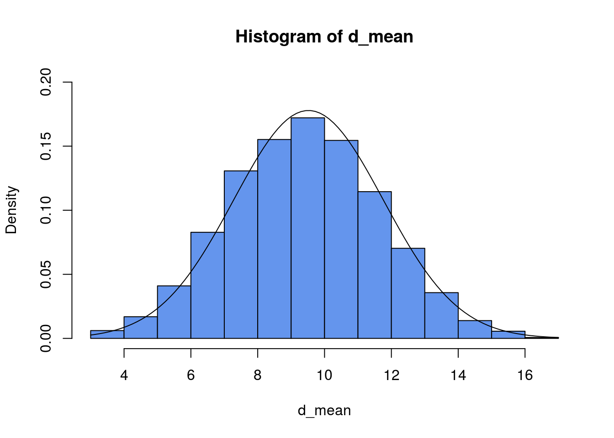

Distribuciones Muestrales
Distribuciones Muestrales
Uno de los objetivos de la estadística es saber acerca del comportamiento de parámetros poblacionales tales como: la media \(\mu\), la varianza \(\sigma^2\) o la proporción \(p\). Se extrae una muestra aleatoria de la población y se calcula el valor de un estadístico correspondiente, por ejemplo, la media muestral \(\bar{X}\), la varianza muestral \(S^2\) o la proporción muestral \(\hat{p}\). El valor del estadístico es aleatorio porque depende de los elementos elegidos en la muestra seleccionada y, por lo tanto, el estadístico tiene una distribución de probabilidad la cual es llamada la Distribución Muestral del Estadístico.
Notación
Parametros:
Para la media poblacional se usa la letra \(\mu\).
Para la varianza poblacional se usa la letra \(\sigma^2\).
Para la varianza poblacional se usa la letra \(\sigma\).
Estadísticos:
Si \(X\) es una variable aleatoria, entonces:
Para la media muestral se usa \(\bar{X}\).
Para la varianza muestral se usa la letra \(S^2\).
Para la varianza poblacional se usa la letra \(S\).
Distribución de la media muestral cuando la población es normal
Suponga que su objeto de estudio es una población normal y de donde se extraen muestras aleatorias de tamaño \(n\) de una población infinita con media poblacional \(\mu\) y varianza \(\sigma^2\). Entonces,
La media de las medias muestrales es igual a la media poblacional. Es decir,
\[\mu_{\bar{X}}=\mu\]
La varianza de las medias muestrales es igual a la varianza poblacional dividida por \(n\). En consecuencia la desviación estándar de las medias muestrales (llamada también el error estándar de la media muestral), es igual a la desviación estándar poblacional dividida por la raíz cuadrada de \(n\). Es decir,
\[\sigma_{\bar{X}}=\dfrac{\sigma}{\sqrt{n}}\]
Finalmente se cumple que
\[\bar{X} \sim Normal(\mu,\frac{\sigma}{\sqrt{n}})\]
El Teorema del Límite Central
De una población con media y varianza se extraen muestras aleatorias de tamaño \(n\), entonces la media muestral \(\bar{X}\) se comporta aproximadamente como una variable aleatoria normal con media igual a la media poblacional \(\mu\) y con desviación estándar \(\sigma\) igual a la desviación poblacional dividida por la raíz cuadrada del tamaño de la muestra, siempre que sea grande. Esto es:
\[\bar{X} \sim Normal(\mu,\frac{\sigma}{\sqrt{n}})\]
Estandarizado, obtenemos:
\[Z = \dfrac{\bar{X}-\mu}{\dfrac{\sigma}{\sqrt{n}}}\]
entonces:
\[Z \sim Normal(0,1)\]
Ilustración de cómo funciona el Teorema del límite central
Considerar una población que consiste de los siguientes datos: 3, 4, 6, 8, 10, 11, 12, 15, 17. Es decir N=9.
1) Calculamos la media y desviación estándar de dicha población. Para esto usamos RStudio
N <- c(3, 4, 6, 8, 10, 11, 12, 15, 17)
media_N <- mean(N)
media_N## [1] 9.555556sd_N <- sd(N)
sd_N## [1] 4.772607Notamos que,
\[\mu=9.55\]
y que
\[\sigma=4.77\]
2) Extraemos 30 muestras de tamaño 4 de dicha población, esto mediante el siguiente código
N <- c(3, 4, 6, 8, 10, 11, 12, 15, 17)
d_mean <- c()
for (i in 1:30){
d_mean[i] <- mean(sample(N,size = 4,replace = TRUE))
}
print(d_mean)## [1] 7.50 8.75 6.75 13.50 8.00 9.00 11.50 9.75 11.50 10.75 6.25
## [12] 11.25 10.75 10.25 8.75 10.25 12.50 10.75 11.50 8.00 8.75 11.75
## [23] 12.25 8.75 10.25 12.25 10.00 14.75 11.75 5.753) Calculamos las medias de todas esas muestras y tratamos de ver gráficamente mediante un histograma al menos si hay acercamiento a Normalidad.
mean(d_mean)## [1] 10.11667sd(d_mean)## [1] 2.12815hist(d_mean,col = "cornflowerblue",freq = F,ylim = c(0,0.2))
curve(dnorm(x,mean(d_mean),sd(d_mean)),add=TRUE)
Interpretación:
1. Notar que la media de las medias muestrales es
\(\mu_{\bar{X}}=\) 10.12.
Este resultado está bien cerca de la media poblacional, pues \(\mu=9.55\)
2. La desviación estándar de la media muestral es 2.13, mientras que
\(\sigma_{\bar{X}}=\dfrac{\sigma}{\sqrt{n}}=\dfrac{4.77}{\sqrt{4}}=2.4\) .
Notamos que ambos valores también están relativamente cerca.
El histograma está un poco alejado de la idea de Normalidad.
Podemos incrementar el tamaño de las muestras se puede notar una mejor aproximación a la Normal.
Si se incrementa la cantidad de muestras a diez mil, se puede notar gráficamente una mejor aproximación a la distribución Normal, mediante la idea del histograma.
N <- c(3, 4, 6, 8, 10, 11, 12, 15, 17)
d_mean <- c()
for (i in 1:10000){
d_mean[i] <- mean(sample(N,size = 4,replace = TRUE))
}
hist(d_mean,col = "cornflowerblue",freq = F,ylim = c(0,0.2))
curve(dnorm(x,mean(d_mean),sd(d_mean)),add=TRUE)
Ahora, con un mayor número de muestras tenemos que:
\(\mu_{\bar{X}}=\) 9.52.
Este resultado está bien cerca de la media poblacional, pues \(\mu=9.55\)
2. La desviación estándar de la media muestral es 2.22, comparado con \(\sigma_{\bar{X}}=2.38\)
Aplicaciones:
Caso 1: Cuando la población es normal.
Estadísticas de GPA. El promedio de calificaciones de todos los estudiantes que toman cursos de introducción a la estadística en los Estados Unidos varía según una distribución normal \(Normal(3, 0.2)\)
¿Cuál es la distribución muestral del promedio muestral para una clase de 5 estudiantes?
Supongamos que \(X\) es la variable aleatoria, entonces
\[\bar{X} \sim Normal\Big(3,\frac{0.2}{\sqrt{5}}\Big)\]
¿Cuál es la distribución muestral del promedio muestral para una clase de 40 estudiantes?
\[\bar{X} \sim Normal\Big(3,\frac{0.2}{\sqrt{40}}\Big)\]
¿Cuál es la distribución muestral del promedio muestral para una clase de 100 estudiantes?
\[\bar{X} \sim Normal\Big(3,\frac{0.2}{\sqrt{100}}\Big)\]
Se extrae un muestra de tamaño \(n=30\) de una población que tiene una distribución desconocida con media \(\mu\) y varianza \(\sigma^2\), pero que por alguna razón conocemos que \(\mu=10\)y que \(\sigma^2=33.34\). Con la información anterior estamos interesados en contestar las siguientes preguntas:
¿Cuál es la distribución muestral del promedio muestral?, es decir la distribución de \(\bar{X}\)
¿Cuál es la probabilidad de obtener un promedio muestral mayor a 12.5?
¿Cuál es la probabilidad de encontrar un promedio muestral entre 8 y 15?
Caso 2: Cuando desconocemos la distribución de la población y \(n \geq 30\)
Supongamos que el ingreso familiar promedio en los Estados Unidos es de \(\$51,344\), con una desviación estándar de \(\$15,377\). ¿Cuál es la probabilidad de que una muestra aleatoria de \(124\) hogares tenga un ingreso familiar promedio de más de $ 54,000?